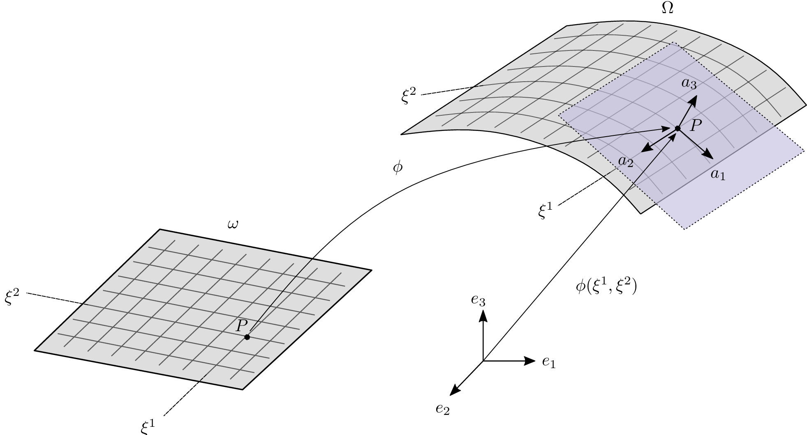

Curvilinear elasticity
Most shells theories rely on the definition of a smooth injective immersion $\Phi:\Omega\to\mathbf{E}^3$, which is a $\mathcal{C}^1(\Omega,\mathbf{E}^3)$ difeomerophism, that maps from the curvilinear coordinate system defined on the open set $\Omega\in\mathbb{R}^3$ onto the Euclidean space $\mathbf{E}^3$. This immersion is fully characterized by the metric tensor $g_{ij}=\mathbf{g}_i\cdot\mathbf{g}_j$, where the covariant basis vector are defined as
\[\mathbf{g}_i=\frac{\partial \Phi(\xi^1,\xi^2,\xi^3)}{\partial \xi^i}, \quad i\in 1,2,3.\]
For an immersed 2D shell, where the curvilinear coordinates are obtained from an open set $\omega\in\mathbb{R}^2$, see Figure 1. The immersion is fully characterized by two sets of equations, the surface metric tensor and the curvature tensor, both of which play an important role in shell theories.

The surface metric tensor $a_{\alpha\beta}=\mathbf{a}_\alpha\cdot\mathbf{a}_\beta$ and the curvature tensor $b_{\alpha\beta}=\hat{\mathbf{a}}_3\cdot\partial_\alpha\mathbf{a}_\beta$ are derive from the surface basis vectors\[\mathbf{a}_\alpha=\frac{\partial \phi(\xi^1,\xi^2)}{\partial \xi^\alpha}, \quad \alpha\in 1,2,\]
where the (unit) surface normal is given by
\[\hat{\mathbf{a}}_3 = \frac{\mathbf{a}_1 \times \mathbf{a}_2}{\|\mathbf{a}_1 \times \mathbf{a}_2\|},\]
which obviously satisfies $\hat{\mathbf{a}}_3\cdot\mathbf{a}_\alpha=0$. This allows to transform the second fundamental form of the surface
\[\begin{split} \partial_\beta(\hat{\mathbf{a}}_3\cdot\mathbf{a}_\alpha) &= \hat{\mathbf{a}}_3\cdot \partial_\beta\mathbf{a}_{\alpha} + \partial_\beta\hat{\mathbf{a}}_{3}\cdot\mathbf{a}_\alpha = 0,\\ -\mathbf{a}_\alpha\cdot \partial_\beta\hat{\mathbf{a}}_{3} &= \hat{\mathbf{a}}_3\cdot \partial_\beta\mathbf{a}_{\alpha} = b_{\alpha\beta}.\\ \end{split}\]
The first fundamental form or metric tensor of the surface has an inverse
\[a^{\alpha\beta} = [a_{\alpha\beta}]^{-1}\]
which allows to transform covariant quantities into their contravariant form
\[\mathbf{a}^\alpha = a^{\alpha\beta}\mathbf{a}_\beta.\]
In the following, we use the notation $\mathbf{a}_{\alpha,\beta}$ and $\partial_\beta\mathbf{a}_\alpha$ for $\frac{\partial\mathbf{a}_\alpha}{\partial\xi^\beta}$.
Green-Lagrange strain tensor
The Green-Lagrange strain tensor is given by half the increment in the metric tensor Chapelle et al. [1]
\[e_{ij} = \frac{1}{2}\left(g_{ij} - G_{ij}\right).\]
where $g_{i,j}$ and $G_{ij}$ are the metric tensor in the current and in the reference configuration, respectively. Another form can be obtained by subsituting the definition of $g_{ij}$ and $G_{i,j}$ to get
\[e_{ij} = \frac{1}{2}\left(\mathbf{g}_i\cdot\mathbf{g}_j - \mathbf{G}_j\cdot\mathbf{G}_i\right).\]
For linear analysis, it is common to expand the second expression with the definition of the covariant basis
\[g_{ij} = \frac{\partial\Phi(\xi^1,\xi^2,\xi^3)}{\partial\xi^i}\cdot\frac{\partial\Phi(\xi^1,\xi^2,\xi^3)}{\partial\xi^j} \quad G_{ij} = \frac{\partial\Phi^0(\xi^1,\xi^2,\xi^3)}{\partial\xi^i}\cdot\frac{\partial\Phi^0(\xi^1,\xi^2,\xi^3)}{\partial\xi^j}\]
where we can substitute the displacement field for the mapping in the current configuration
\[\mathbf{u}(\xi^1,\xi^2,\xi^3) = \Phi(\xi^1,\xi^2,\xi^3) - \Phi^0(\xi^1,\xi^2,\xi^3)\]
dropping the $(\xi^1,\xi^2,\xi^3)$ terms for brevity, we get
\[e_{ij} = \frac{1}{2}\left(\left(\frac{\partial\Phi^0}{\partial\xi^i}+\frac{\partial\mathbf{u}}{\partial\xi^i}\right)\cdot\left(\frac{\partial\Phi^0}{\partial\xi^j}+\frac{\partial\mathbf{u}}{\partial\xi^j}\right) - \frac{\partial\Phi^0}{\partial\xi^i}\cdot\frac{\partial\Phi^0}{\partial\xi^j}\right)\]
expanding the first term and cancelling the last contribution with the first expansion, we get
\[e_{ij} = \frac{1}{2}\left(\frac{\partial\Phi^0}{\partial\xi^i}\cdot\frac{\partial\mathbf{u}}{\partial\xi^j} + \frac{\partial\mathbf{u}}{\partial\xi^i}\cdot\frac{\partial\Phi^0}{\partial\xi^j} - \frac{\partial\mathbf{u}}{\partial\xi^i}\cdot\frac{\partial\mathbf{u}}{\partial\xi^j}\right)\]
or simply
\[e_{ij} = \frac{1}{2}\left(\mathbf{G}_i\cdot\frac{\partial\mathbf{u}}{\partial\xi^j} + \frac{\partial\mathbf{u}}{\partial\xi^i}\cdot\mathbf{G}_j + \frac{\partial\mathbf{u}}{\partial\xi^i}\cdot\frac{\partial\mathbf{u}}{\partial\xi^j}\right).\]
In linear shell analysis the last term is usually dropped since it is quadratic in the displacement field and we arrive to the linear covariant shell strains
\[e_{ij} = \frac{1}{2}\left(\mathbf{G}_i\cdot\mathbf{u}_{,j} + \mathbf{u}_{,i}\cdot\mathbf{G}_j\right).\]
In the following, we will use the full nonlinear covariant strain tensor.